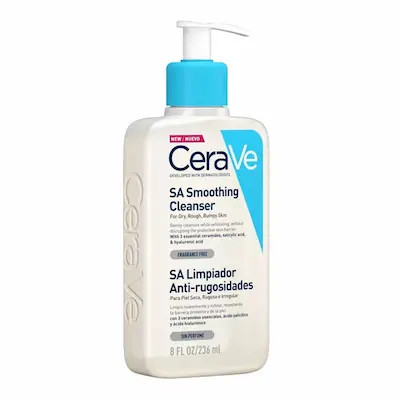
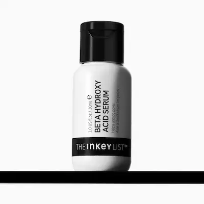
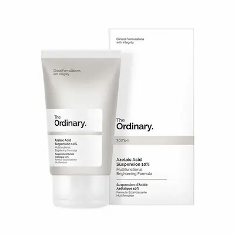
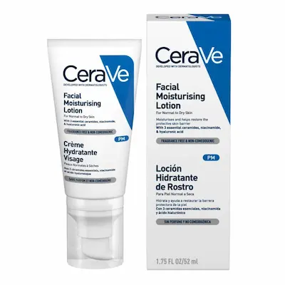
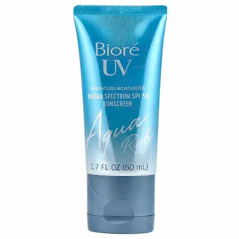

Почему подготовка кожи важнее макияжа
Макияж не скрывает проблемы кожи — он их подчёркивает. Неподготовленная кожа делает даже дорогие продукты заметными и неаккуратными.
Правильная подготовка позволяет использовать меньше косметики и при этом выглядеть лучше.
Протокол подготовки жирной кожи: лучшие уходовые средства
Независимый обзор. Продукты подобраны на основе эффективности для жирной кожи.

Шаг 1: Очищение
Продукт: La Roche-Posay Effaclar Gel
Высокая эффективность
Глубоко очищает кожу и удаляет излишки себума.
Подходит для жирной и чувствительной кожи, не пересушивает.

Шаг 2: Экфолиация
Продукт: Paula’s Choice 2% BHA
Высокая эффективность
Очищает поры и уменьшает чёрные точки.
Салициловая кислота уменьшает воспаления и жирность кожи.

Шаг 3: Сыворотка
Продукт: Geek & Gorgeous B-Bomb
Высокая эффективность
Контролирует себум и уменьшает воспаления.
Ниацинамид + цинк для жирной и проблемной кожи.

Шаг 4: Увлажнение
Продукт: Bioderma Sébium Mat Control
Высокая эффективность
Матирует и увлажняет без жирного блеска.
Отличная база под декоративную косметику.

Шаг 5: SPF
Продукт: Eucerin Oil Control SPF 50
Высокая эффективность
Защищает и контролирует жирный блеск.
Лёгкая текстура, не забивает поры.
Протокол подготовки сухой кожи: интенсивное увлажнение и восстановление барьера
Независимый обзор. Подбор средств для сухой и обезвоженной кожи.

Шаг 1: Мягкое очищение
Продукт: Cetaphil Gentle Skin Cleanser
Высокая эффективность
Очищает без нарушения защитного барьера.
Идеален для чувствительной и сухой кожи.

Шаг 2: Увлажнение
Продукт: Hada Labo Gokujyun Lotion
Высокая эффективность
Глубоко увлажняет и насыщает влагой.
Гиалуроновая кислота разного молекулярного веса.

Шаг 3: Сыворотка
Продукт: The Ordinary Hyaluronic Acid + B5
Высокая эффективность
Восстанавливает уровень влаги в коже.
С пантенолом для дополнительного успокоения.

Шаг 4: Питание
Продукт: CeraVe Moisturizing Cream
Высокая эффективность
Восстанавливает липидный барьер кожи.
С керамидами и гиалуроновой кислотой.

Шаг 5: SPF
Продукт: La Roche-Posay Toleriane SPF
Высокая эффективность
Защищает и дополнительно увлажняет.
Подходит для чувствительной сухой кожи.
Протокол для неровной кожи: восстановление, выравнивание и контроль воспалений
Независимый обзор. Средства для кожи с акне, пост-акне и неровной текстурой.

Шаг 1: Очищение
Продукт: CeraVe SA Smoothing Cleanser
Высокая эффективность
Очищает и мягко отшелушивает кожу.
Салициловая кислота помогает при неровной текстуре.

Шаг 2: Химическое отшелушивание
Продукт: The Inkey List Beta Hydroxy Acid (BHA)
Высокая эффективность
Очищает поры и уменьшает чёрные точки.
Салициловая кислота помогает выровнять текстуру и снизить воспаления.

Шаг 3: Лечение
Продукт: The Ordinary Azelaic Acid
Высокая эффективность
Осветляет пост-акне и уменьшает воспаления.
Выравнивает тон и борется с покраснениями.

Шаг 4: Восстановление
Продукт: CeraVe PM Facial Moisturizing Lotion
Высокая эффективность
Восстанавливает барьер и успокаивает кожу.
С керамидами и ниацинамидом.

Шаг 5: Солнцезащита
Продукт: Biore UV Aqua Rich Watery Essence SPF 50+
Высокая эффективность
Лёгкая защита без утяжеления кожи.
Флюидная текстура быстро впитывается и не забивает поры.
Протокол подготовки кожи с возрастными изменениями перед макияжем
Независимый обзор. Подобраны средства, которые улучшают текстуру кожи и делают макияж визуально более ровным и свежим.

Шаг 1: Очищение
Продукт: Avène Extremely Gentle Cleanser
Высокая эффективность
Мягко очищает без нарушения защитного барьера.
Подходит для чувствительной и возрастной кожи.

Шаг 2: Увлажнение
Продукт: COSRX Advanced Snail 96 Essence
Высокая эффективность
Интенсивно увлажняет и повышает упругость кожи.
Выравнивает текстуру кожи перед макияжем.

Шаг 3: Сыворотка
Продукт: Vichy Liftactiv Vitamin C Serum
Высокая эффективность
Придает коже сияние и выравнивает тон.
Осветляет и улучшает внешний вид кожи.

Шаг 4: Крем
Продукт: Filorga Hydra-Filler Cream
Высокая эффективность
Интенсивно увлажняет и разглаживает кожу.
Создает гладкую поверхность под макияж.

Шаг 5: Зона вокруг глаз
Продукт: La Roche-Posay Hyalu B5 Eyes
Высокая эффективность
Увлажняет и разглаживает мелкие морщины.
Предотвращает скатывание консилера.

Шаг 6: SPF
Продукт: Isntree Hyaluronic Acid Watery Sun Gel
Высокая эффективность
Защищает и придает коже увлажненный финиш.
Легкая текстура без белого налета.
Базовые этапы подготовки кожи
Как подобрать подготовку по типу кожи
Жирная кожа
Для жирной кожи важно контролировать выработку себума и использовать лёгкие текстуры. Подходят гели, сыворотки с ниацинамидом и матирующие кремы.
Сухая кожа
Сухой коже необходимо интенсивное увлажнение и питание. Используйте кремы с керамидами, маслами и гиалуроновой кислотой.
Кожа с акне
Важно не перегружать кожу и использовать некомедогенные средства. Лёгкие текстуры и успокаивающие компоненты помогают избежать воспалений.
Кожа с возрастными изменениями
Для кожи с возрастными изменениями важно восстановить уровень увлажнения, повысить упругость и визуально сгладить текстуру кожи. Лучше всего подходят сыворотки с антиоксидантами, кремы с эффектом разглаживания и средства, придающие коже естественное сияние.


Частые ошибки при подготовке кожи
Не уверены, что подходит именно вам?
Запишитесь на идеальный макияж с правильным уходом под ваш тип кожи к профессиональному специалисту.
Записаться на услугу

Часто задаваемые вопросы
Зачем вообще нужна подготовка кожи перед декоративной косметикой?
Подготовка кожи помогает выровнять текстуру, продлить стойкость косметики и предотвратить забивание пор. Без базового ухода даже дорогие средства могут ложиться неровно и подчёркивать недостатки.
Какие этапы обязательны перед нанесением косметики?
Минимальный набор — очищение, увлажнение и защита кожи. При необходимости добавляются сыворотки и SPF. Эти этапы помогают создать ровную и здоровую основу.
Отличается ли подготовка кожи для жирной и сухой кожи?
Да. Жирной коже важно лёгкое увлажнение и контроль себума, а сухой — глубокое питание и восстановление барьера. Универсального ухода нет — он всегда подбирается под тип кожи.
Можно ли пропускать увлажняющий крем, если кожа жирная?
Нет. Недостаток увлажнения усиливает выработку себума. Жирная кожа тоже нуждается в лёгких гелевых или флюидных увлажняющих средствах.
Что делать, если кожа шелушится перед нанесением косметики?
Это признак обезвоженности или повреждённого барьера. Нужно мягкое очищение, восстановление с помощью увлажняющих и успокаивающих средств и временный отказ от агрессивных активов.
Нужно ли использовать SPF перед декоративной косметикой?
Да, особенно если есть дневное освещение. SPF защищает кожу от фотостарения и пигментации. Лучше выбирать лёгкие текстуры, которые не утяжеляют кожу и не конфликтуют с тональными средствами.
Сколько времени нужно на правильную подготовку кожи?
В среднем 5–10 минут. Но регулярный уход в течение дня и недели важнее, чем быстрые действия перед нанесением косметики.